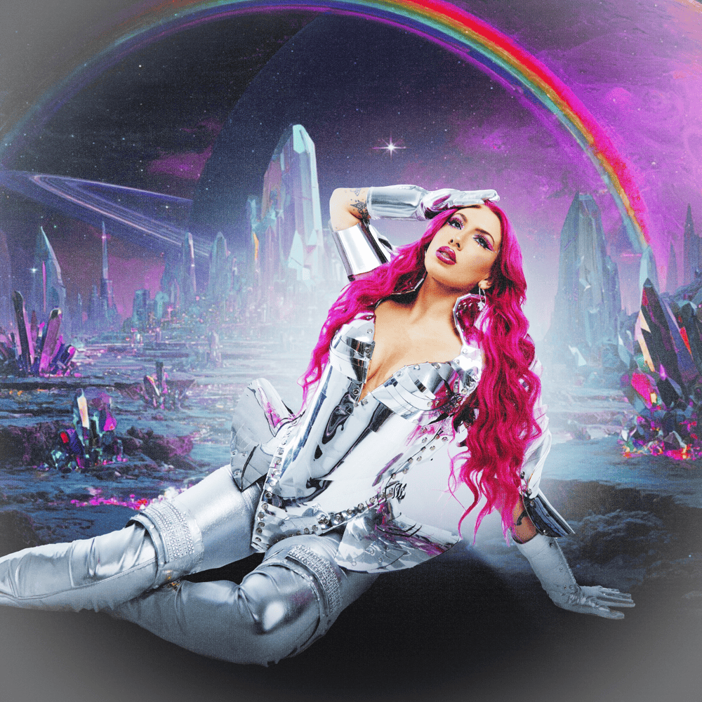

She has been involved in music since childhood. Her family was not wealthy enough, so she had to learn to sing on her own. She performed in all the school orchestras, choirs, theaters, and so on. She calls herself a "Theater Girl" and actively uses her theatrical skills on stage and in music videos, showcasing her vibrant charisma. She can play the piano and is currently learning to play the guitar.
Chrissy is an indie artist who creates music and tours without the help of any labels. She often jokes about having only $7 in her bank account, which makes her work much more difficult, but thanks to the support of her followers and the team she has built herself, she doesn't give up and keeps going.
In April 2025, she attempted to enter the rock era of her musical career due to her deep depression. After releasing 2 singles, "Cherry Do You Love Me" and "Clam Casino," she received no response, and in September, she returned with the catchy pop song "Passionfruit." She mentioned that she wrote her album "Christine" in just two weeks in August, as she had planned to release a project in 2025.
In one of her streams, Chrissy revealed that although she has lived in America all her life, she is of Slovak and Irish descent.